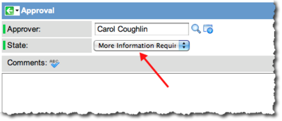

Custom Transitions for the Approval - User Activity
1 Overview
Controls on the Approval - User activity enable an administrator to add an additional workflow transitions to the activity other than the default transitions of Approved or Rejected. Transitions defined in this fashion do not become a permanent feature of the Approval - User activity. After a new transition is configured, that transition must be applied manually to subsequent instances of the activity, where desired.
2 Configuration Tasks
Perform the following configuration tasks in order:
- Create a new state (or states) that is available as a choice on the User Approval Form.
- Add a business rule that executes before the SNC - Run Parent Workflow (Approved) rule in the baseline system to react to update events.
- Add the new state to the condition properties of the Approval - User activity in the workflow.
- Add an Approval Script to the activity to define the result of the activity.
2.1 Task 1: Add a State to the User Approval Form
- Navigate to Service Desk > My Approvals.
- Click New.
- In the Approval form, select an Approver from the list.
- Submit and reopen the form.
- Right-click the State label and select Show Choice List from the context menu.
- Click New.
- Add a new choice for the custom option that will have a condition in the workflow, making note of the value that you assigned to the option.
- Table: Enter sysapproval_approver.
- Label: Type the label as you want it to appear in the choice list. In this example, we use More Information Required.
- Value: This is the value of the choice list option that is used in the approval script and in the Approval - User activity condition. In this example, we use more.
- Click Submit.
- The new choice appears in the list of choices for the Approval [sysapproval_approver] table.
- The new choice now appears as a choice for the State field on the Approval form. When a user selects this option, the values from the Choice form become the state that workflows and business rules react to on insert or update.
- 
{kind=link}
{kind=link}
{kind=link}
{kind=link}
2.2 Task 2: Add a Business Rule to React to the State Change
In the baseline system, ServiceNow provides a business rule called SNC - Run parent workflows (Approval) that triggers the workflow associated with the task of the current approval when the following conditions occur:
current.state.changesTo('approved') || current.state.changesTo('rejected') || current.operation() == 'delete'
To run the workflow on the newly introduced state, that state must be considered when starting a workflow. The best practice is to create a second business rule for the new state, ordered for evaluation ahead of the existing rule (Order < 100) that performs the same tasks based on the conditions of the custom state.
- Navigate to System Definition > Business Rules.
- Select the SNC - Run parent workflows (Approval) rule from the list.
- Right-click in the header bar and select Insert and Stay from the context menu.
- Edit the form as follows:
- Name: For example, you might enter Custom - Run parent workflows (Approval).
- Order: Select an order number less than 100, such as 99.
- Condition: Enter the following condition: current.state.changesTo('more')
- If you have added additional states, append them to the new condition as an OR statement. For example, the condition might be:
- Click Update to save the new business rule.
{kind=link}
2.3 Task 3: Incorporate the New State into the Workflow
After completing the previous tasks, you are ready to attach the new state to an Approval - User activity in the workflow.
- Make sure the workflow is checked out from the Workflow Editor.
- If not, open the menu under the gear icon and select Checkout.
- Right-click on an Approval - User activity and select Add Condition from the context menu.
- Configure the New Workflow Condition form as follows:
- Name: Type the name of the state as it appears in the choice list. This is used for the new transition label attached to the activity in the workflow. This example is configured to use More Information Required.
- Condition: Enter activity.result == 'more'
- Short Description: Describe the purpose of this state. In this example, More information is needed before this activity can be approved.
- Click Submit.
- Repeat this procedure for each custom approval state that you have created for the Approval - User activity.
{kind=link}
{kind=link}
2.4 Task 4: Add an Approval Script to the Activity
Add an approval script to the activity that defines the condition under which the activity executes. This includes conditions for the new More Information Required transition and any other transitions added to the activity.
- Check our the Workflow containing the Approval - User activity for which the new transition is assigned.
- Double-click the Approval - User activity.
- The Activity Properties form displays.
- In the Wait for field, select Condition based on script from the choice list.
- This selection displays the Approval Script field.
- Add the script to the form, and then click Update.
- An example of a script for a single state addition would be:
if(approvalIDs && approvalIDs['more']) {
answer = 'more';
} else if (counts.approved > 0) {
answer = 'approved';
} else if (counts.rejected >0) {
answer = 'rejected';
}
The form looks like this:
{kind=link}
- The elements of this script are defined as follows:
- Add as many else if statements as you have conditions, where each else if statement sets the answer to a condition defined in Task 3.
- For all default states of approved, rejected, requested, not_requested, and not_required, the counts collection can be tested for count > 0 to discover if there has been an approval that met one of those states.
- All custom states are accumulated in the approvalIDs collection and accessed by the state value.
- approvalIDs['more'] is a list of all sysapproval_approver.sys_id records for a given task that have the state value = ‘more’.
2.4.1 Sample Script for Multiple Custom Approval States
You can configure multiple approval states at once. Following is an example of a script for two custom approval states. Make sure you have properly configured all custom states using the tasks on this page in the proper sequence prior to creating this script.
if (approvalIDs) {
if (approvalIDs['more'])
answer = 'more';
else if (approvalIDs['even_more']
answer = 'even_more';
} else if (counts.rejected > 0) {
answer = 'rejected';
} else if (counts.approved > 0) {
answer='approved';
}
The form would look like this:
{kind=link}
3 Process Flow
The following is the process flow for the custom approval states explained in this page:
{kind=link}